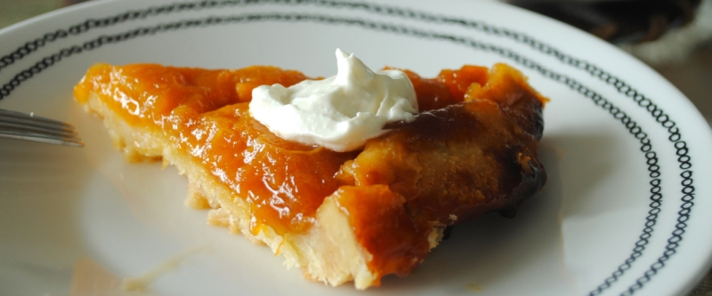

приготовление:
-
Разогреть духовку до 200 градусов. Тесто: 250 гр. муки просеять, сделать углубление, щепотка соли, 1 ст.л.сахара и 1 желток. 150 гр. сливочного масла нарезать кубиками и бросить в муку. Затем вымесить руками, добавив 3 ст.л. холодной воды. Не должно прилипать к рукам. Убрать в холодильник.
-
1 кг. Антоновки очистить от кожуры и сердцевины, нарезать на дольки, выложить в смазанную форму плотно. Посыпать цедрой лимона, добавить ванильный сахар, мускатный орех и корицу.
-
Для карамели: разогреть сильно сковороду. 6 ст.л. сахара по ложке высыпать на сковороду. Карамель не должна кипеть или чернеть. Полить карамелью яблоки. 30 гр. сливочного масла кубиками выложить на яблоки. Тесто раскатать по размеру формы, накрыть ей яблоки, сделать ножом дырочки. Выпекать 25-30 минут. Перевернуть на блюдо.
-
Подавать лучше всего теплым, положив сверху пломбира.